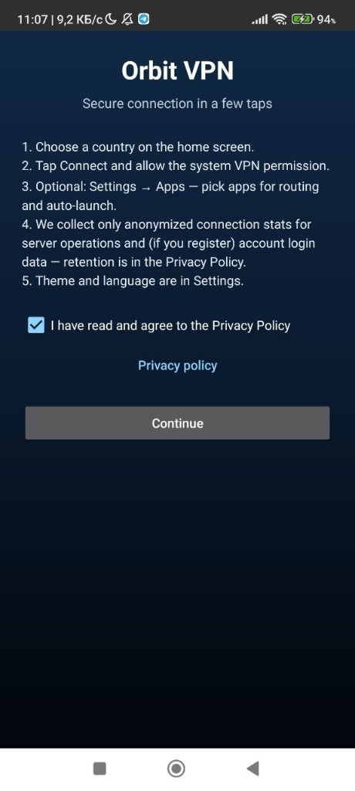
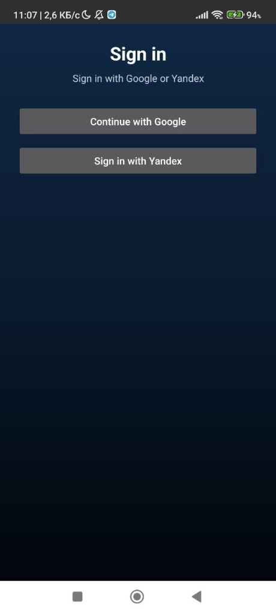
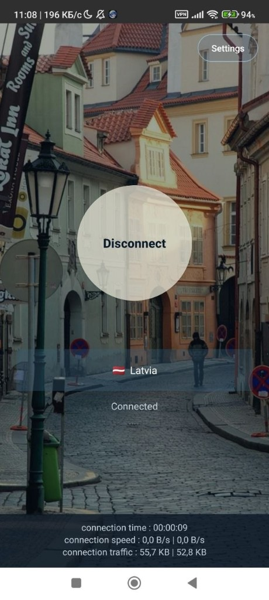

Почувствуй себя в Риге
Кому нужен Orbit
Стабильный выход в ЕС — будто смотришь на Даугаву с башни Святого Петра.
Orbit VPN
Один понятный VPN для телефона: шифрованный туннель, сервер в Риге (Латвия, ЕС) и спокойная работа в публичных сетях.
Сейчас — ранний доступ для Android. Без подписки на старте.
Тем, кому важен стабильный выход в ЕС и собственная приватность.
Почувствуй себя в Риге
Стабильный выход в ЕС — будто смотришь на Даугаву с башни Святого Петра.
Вечер в Старом городе
Европейский IP для кабинетов и сервисов — без лишней сложности.
Зимний свет Балтии
Кафе, отели, аэропорты — трафик в шифрованном туннеле до Риги.
Примерный маршрут до ноды Orbit по вашему IP. Это не GPS — город и страна оцениваются приблизительно.
Структура знакома по классическим VPN-сервисам — без пустых обещаний «весь мир».
Современный стек (VLESS / Reality) — трафик между вами и сервером закрыт от чужой сети.
Инфраструктура в Риге. Меняете виртуальное положение на европейское — осознанно и прозрачно.
Вход по email, Google или Яндекс. Каталог и доступ подтягиваются с вашего аккаунта.
Мы не строим продукт на слежке за контентом. Политика приватности — в приложении и на сайте.
Один экран подключения, выбор страны/ноды, без десятков непонятных переключателей.
Сейчас фокус на качестве одной EU-локации. Новые регионы — когда аудитория вырастет.
Первый релиз — Android. Одна лицензия аккаунта; расширение на другие платформы — в планах.
На этапе запуска полный функционал доступен бесплатно. Платные планы появятся позже — без сюрпризов в мелком шрифте.
Сейчас
0 €
на старте
Скоро
—
подписка
Скачайте release-сборку и войдите через Google или Яндекс. Актуальная версия: 1.0.32.
APK не из Store: скачайте файл выше, разрешите установку неизвестных приложений для браузера, затем откройте Orbit VPN.



Коротко и по делу — без мелкого шрифта.
Нет, продукт не строится на просмотре содержимого. Нужны данные аккаунта (email / OAuth), сессия и служебные сведения для выдачи доступа. Подробности — в политике конфиденциальности.
Сейчас фокус на качестве одной ноды в ЕС, а не на длинном списке флагов. Новые регионы появятся, когда аудитория и инфраструктура вырастут.
На early access функционал бесплатный. На free после пробного периода возможна реклама через Yandex Mobile Ads. В будущем Orbit Plus — без рекламы.
В приложении: Настройки → удаление аккаунта, либо напишите на orbitvpn@mail.ru. Также есть страница delete-account.
Да, если качаете с нашего сайта / официальной ссылки выше. Android спросит разрешение на установку из браузера — это нормально для early access до публикации в Store.
Orbit VPN — сервис защищённого интернет-соединения с инфраструктурой в Риге. Мы делаем акцент на простоте Android-клиента и честном европейском выходе, а не на искусственно раздутом списке стран.
Когда появятся платные тарифы, вы сможете выбрать срок подписки: чем дольше период, тем ниже цена за день — как у привычных VPN-сервисов. До этого момента early access остаётся бесплатным.
Кратко. Полный текст: orbitvpn.download/privacy.html. Дата: 18 ноября 2026.
Orbit VPN обрабатывает данные аккаунта (email / OAuth), токен сессии, служебные данные VPN-доступа. На free после пробного периода — рекламный идентификатор через Yandex Mobile Ads.
Удаление аккаунта: в приложении (Настройки) или orbitvpn@mail.ru. Условия: terms.html.
Сервис не предназначен для детей младше 13 лет. Актуальная полная политика всегда на https://orbitvpn.download/privacy.html.